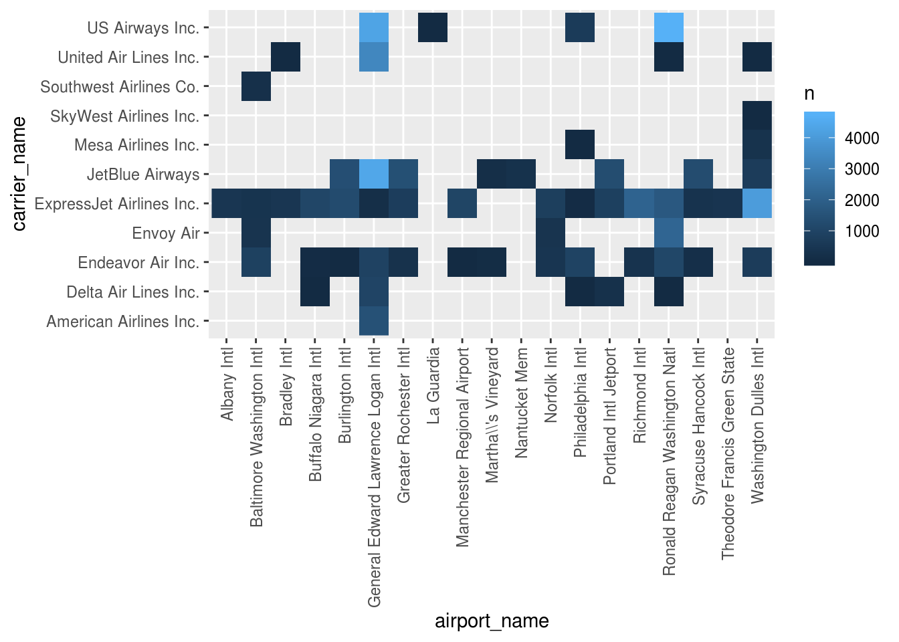

airlines %>%
count(carrier) %>%
filter(n > 1)## # A tibble: 0 x 2
## # ... with 2 variables: carrier <chr>, n <int>airports %>%
count(faa) %>%
filter(n > 1)## # A tibble: 0 x 2
## # ... with 2 variables: faa <chr>, n <int>flights %>%
filter(distance < 300) %>%
left_join(airlines, by = "carrier") %>%
left_join(airports, by = c("dest" = "faa"))## # A tibble: 51,287 x 27
## year month day dep_time sched_dep_time dep_delay arr_time
## <int> <int> <int> <int> <int> <dbl> <int>
## 1 2013 1 1 557 600 -3 709
## 2 2013 1 1 559 559 0 702
## 3 2013 1 1 629 630 -1 721
## 4 2013 1 1 632 608 24 740
## 5 2013 1 1 639 640 -1 739
## 6 2013 1 1 732 735 -3 857
## 7 2013 1 1 733 736 -3 854
## 8 2013 1 1 801 805 -4 900
## 9 2013 1 1 803 810 -7 903
## 10 2013 1 1 820 830 -10 940
## # ... with 51,277 more rows, and 20 more variables: sched_arr_time <int>,
## # arr_delay <dbl>, carrier <chr>, flight <int>, tailnum <chr>,
## # origin <chr>, dest <chr>, air_time <dbl>, distance <dbl>, hour <dbl>,
## # minute <dbl>, time_hour <dttm>, name.x <chr>, name.y <chr>, lat <dbl>,
## # lon <dbl>, alt <int>, tz <dbl>, dst <chr>, tzone <chr>flights %>%
filter(distance < 300) %>%
left_join(airlines, by = "carrier") %>%
rename(carrier_name = name) %>%
left_join(airports, by = c("dest" = "faa")) %>%
rename(airport_name = name) %>%
count(carrier_name, airport_name) %>%
spread(carrier_name, n)## # A tibble: 19 x 12
## airport_name `American Airli… `Delta Air Line… `Endeavor Air I…
## <chr> <int> <int> <int>
## 1 Albany Intl NA NA NA
## 2 Baltimore W… NA NA 856
## 3 Bradley Intl NA NA NA
## 4 Buffalo Nia… NA 3 54
## 5 Burlington … NA NA 2
## 6 General Edw… 1455 972 914
## 7 Greater Roc… NA NA 281
## 8 La Guardia NA NA NA
## 9 Manchester … NA NA 11
## 10 "Martha\\\\… NA NA 71
## 11 Nantucket M… NA NA NA
## 12 Norfolk Intl NA NA 402
## 13 Philadelphi… NA 2 940
## 14 Portland In… NA 235 NA
## 15 Richmond In… NA NA 340
## 16 Ronald Reag… NA 2 1074
## 17 Syracuse Ha… NA NA 170
## 18 Theodore Fr… NA NA NA
## 19 Washington … NA NA 664
## # ... with 8 more variables: `Envoy Air` <int>, `ExpressJet Airlines
## # Inc.` <int>, `JetBlue Airways` <int>, `Mesa Airlines Inc.` <int>,
## # `SkyWest Airlines Inc.` <int>, `Southwest Airlines Co.` <int>, `United
## # Air Lines Inc.` <int>, `US Airways Inc.` <int>airline_names <-
airlines %>%
rename(carrier_name = name)
dest_airport_names <-
airports %>%
select(dest = faa, airport_name = name)
verbose_destinations_by_carrier <-
flights %>%
filter(distance < 300) %>%
count(carrier, dest) %>%
left_join(airline_names, by = "carrier") %>%
select(-carrier) %>%
left_join(dest_airport_names, by = "dest") %>%
select(-dest)
verbose_destinations_by_carrier## # A tibble: 58 x 3
## n carrier_name airport_name
## <int> <chr> <chr>
## 1 914 Endeavor Air Inc. General Edward Lawrence Logan Intl
## 2 2 Endeavor Air Inc. Burlington Intl
## 3 54 Endeavor Air Inc. Buffalo Niagara Intl
## 4 856 Endeavor Air Inc. Baltimore Washington Intl
## 5 1074 Endeavor Air Inc. Ronald Reagan Washington Natl
## 6 664 Endeavor Air Inc. Washington Dulles Intl
## 7 11 Endeavor Air Inc. Manchester Regional Airport
## 8 71 Endeavor Air Inc. "Martha\\\\'s Vineyard"
## 9 402 Endeavor Air Inc. Norfolk Intl
## 10 940 Endeavor Air Inc. Philadelphia Intl
## # ... with 48 more rowsverbose_destinations_by_carrier %>%
ggplot() +
geom_raster(aes(airport_name, carrier_name, fill = n)) +
ggpubr::rotate_x_text()
# theme(axis.text.x = element_text(angle = 90, hjust = 1, vjust = 0.5))Copyright © 2018 Kirill Müller. Licensed under CC BY-NC 4.0.